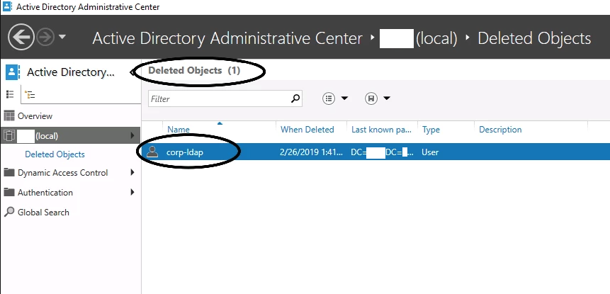
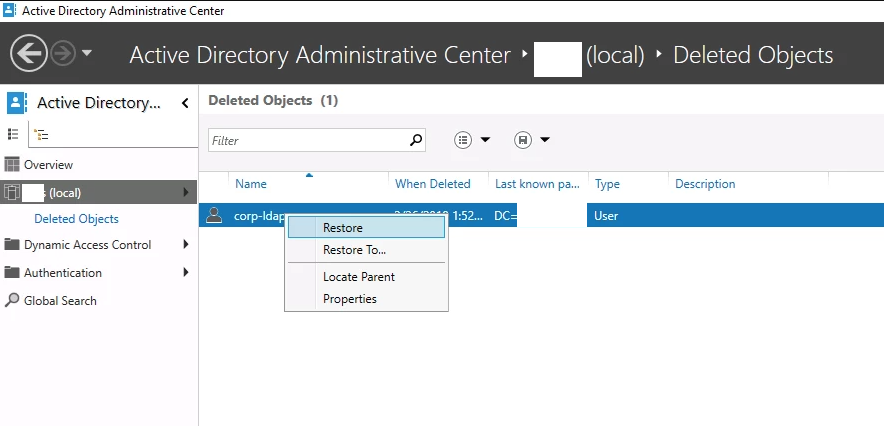
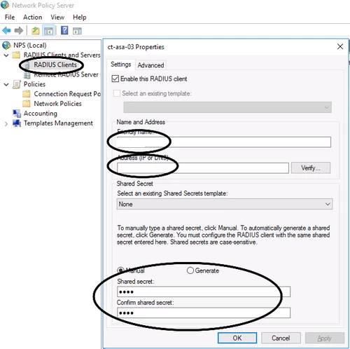
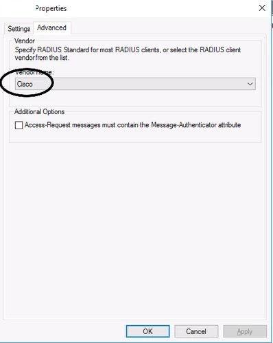
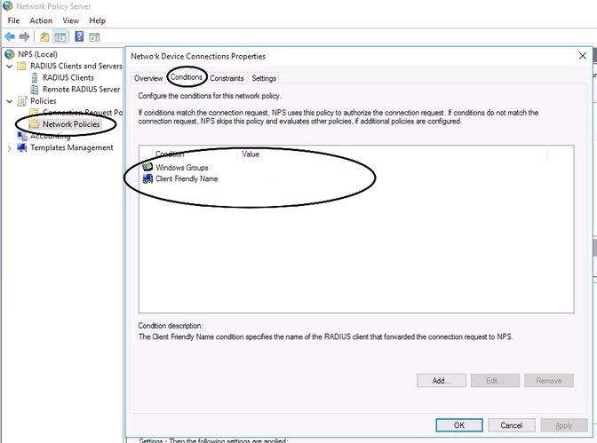
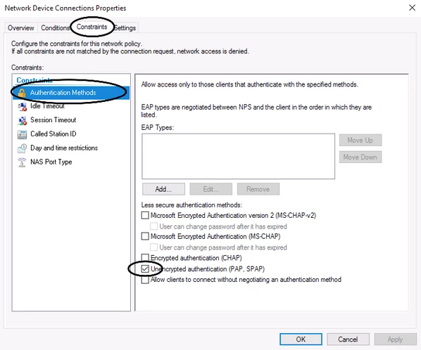
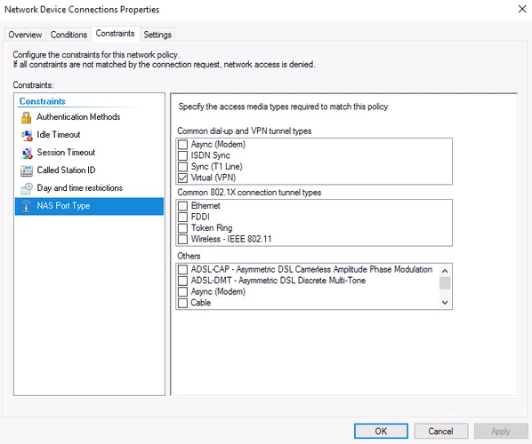
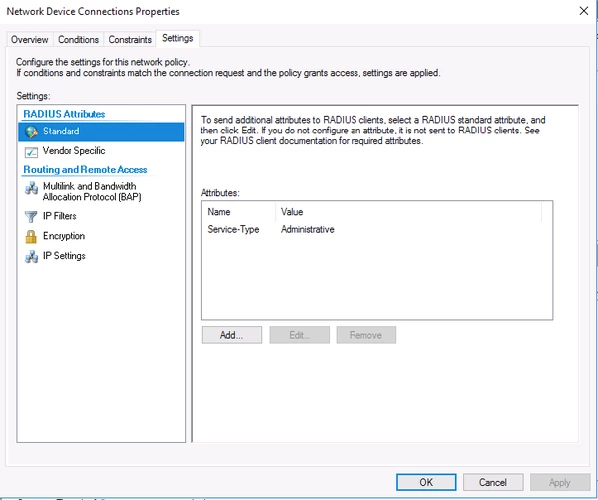
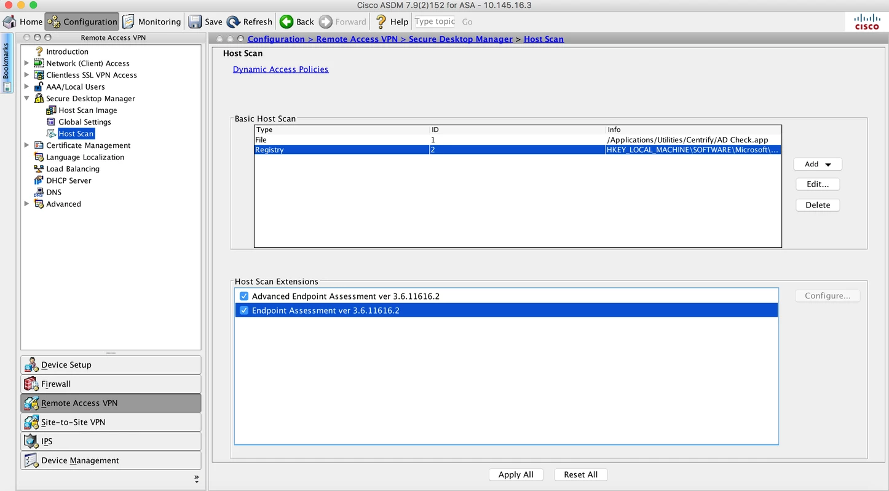
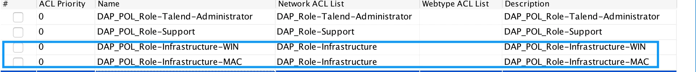

ASA
Adaptive Security Appliance
SCP
https://thestupidengineer.wordpress.com/2015/04/01/scp-file-to-asa/
# Enable SCP on ASA
ssh scopy enable
# From your host / laptop / desktop / whatever
scp -v asa825-51-k8.bin username@IP_ADDRESS:disk0:asa825-51-k8.bin
# From the ASA
scp -v cisco@10.251.21.80:disk0:asa822-k8.bin asa822-k8.bin
LDAP Authentication
Configuration
AAA Authentication via corp-ldap (AD servers). Enable to be kept as LOCAL authentication, otherwise, all AD users will be able to enable.
ASA(config)# no aaa authentication http console LOCAL
ASA(config)# aaa authentication http console corp-ldap LOCAL
ASA(config)# no aaa authentication ssh console LOCAL
ASA(config)# aaa authentication ssh console corp-ldap LOCAL
Testing
AD Server Becomes Unreachable
Run a preliminary test: we can see the aaa-server is active.
ASA# sh aaa-server corp-ldap
Server Group: corp-ldap
Server Protocol: ldap
Server Hostname: server.example.com
Server Address: x.x.x.x
Server port: 0
Server status: ACTIVE, Last transaction at 10:28:15 SAST Mon Feb 25 2019
Shutdown inside interface to simulate AD becoming unavailable.
When connecting to the ASA via SSH or HTTPS, the ASA will flag the aaa-server as FAILED.
ASA# test aaa-server authentication corp-ldap username caleb.sargeant
Server IP Address or name: server.example.com
Password: **************
INFO: Attempting Authentication test to IP address (x.x.x.x) (timeout: 12 seconds)
ERROR: Authentication Server not responding: AAA Server has been removed
ASA# sh aaa-server corp-ldap
Server Group: corp-ldap
Server Protocol: ldap
Server Hostname: server.example.com
Server Address: x.x.x.x
Server port: 0
Server status: FAILED, Server disabled at 12:28:46 SAST Tue Feb 26 2019
If we unshut the inside interface the ASA flags the aaa-server as ACTIVE again after the first authentication test fails.
ASA# conf t
ASA(config)# int g0/0
ASA(config-if)# no shut
ASA(config-if)# end
ASA# test aaa-server authentication corp-ldap username caleb.sargeant
Server IP Address or name: server.example.com
Password: **************
INFO: Attempting Authentication test to IP address (x.x.x.x) (timeout: 12 seconds)
ERROR: Authentication Server not responding: AAA Server has been removed
ASA# test aaa-server authentication corp-ldap username caleb.$
Server IP Address or name: server.example.com
Password: **************
INFO: Attempting Authentication test to IP address (x.x.x.x) (timeout: 12 seconds)
INFO: Authentication Successful
ASA# sh aaa-server corp-ldap
Server Group: corp-ldap
Server Protocol: ldap
Server Hostname: server.example.com
Server Address: x.x.x.x
Server port: 0
Server status: ACTIVE, Last transaction at 10:28:15 SAST Mon Feb 25 2019
Bind User Gets Deleted
The AD Recycle Bin was enabled and he corp-ldap user was deleted.
Test authentication
ASA# test aaa-server authentication corp-ldap username caleb.sargeant
Server IP Address or name: server.example.com
Password: **************
INFO: Attempting Authentication test to IP address (x.x.x.x) (timeout: 12 seconds)
ERROR: Authentication Server not responding: AAA Server has been removed
AAA-Server gets marked as FAILED
ASA# sh aaa-server corp-ldap
Server Group: corp-ldap
Server Protocol: ldap
Server Hostname: server.example.com
Server Address: x.x.x.x
Server port: 0
Server status: FAILED, Server disabled at 13:44:16 SAST Tue Feb 26 2019
Restore the bind user from Deleted Objects in AD
Test authentication again
ASA# test aaa-server authentication corp-ldap username caleb.sargeant
Server IP Address or name: server.example.com
Password: **************
INFO: Attempting Authentication test to IP address (x.x.x.x) (timeout: 12 seconds)
INFO: Authentication Successful
User Account(s) Get(s) Deleted
This one is obvious. We will be able to log in as a different user. If all users are deleted, we can have the ASA’s inside interface cable be unplugged, or console into the ASA and shut the inside interface (or on the switch). When authenticating with the interface shut, the ASA will flag the aaa-server as FAILED and we will be able to login with root (LOCAL) again. See the above tests for proof.
RADIUS AAA
With RADIUS Authentication, we are able to specify which Windows group a user needs to be part of to log in to the ASA.
Configuration
Configure the aaa-server & enable authentication through RADIUS
aaa-server asa-radius protocol radius
aaa-server asa-radius (inside) host server.example.com
key *****
authentication-port 1812
accounting-port 1813
no aaa authentication http console LOCAL
aaa authentication http console asa-radius LOCAL
no aaa authentication ssh console LOCAL
aaa authentication ssh console asa-radius LOCAL
# View packets
debug radius all
NPS
Add a RADIUS Client
 Create a Network Policy (skip Connection Request Policy). The Client Friendly Name optional and perhaps not recommended so that we can use one policy for all network devices
Enable only Unencrypted authentication (PAP, SPAP)
NAS Port Type is Virtual (VPN)
Service-Type is Administrative
Certificates
Intermediate Cert with Key
Create a PKCS #12 Certificate which we will use to import into the ASA:
openssl pkcs12 -export -in wildcard.corp.example.com.crt -inkey wildcard.corp.example.com.key -out wildcard.corp.example.com.p12
Enter Export Password: secret
Verifying - Enter Export Password: secret
To read the certificate:
cat wildcard.corp.example.com.p12 | base64
REDACTED (long string)
On the ASA via CLI (don’t use command nointeractive, which is the default behaviour via ASDM):
ASA/sec/actNoFailover(config)# crypto ca import 2018-10-TrustPoint pkcs12 "secret"
Enter the base 64 encoded pkcs12.
End with the word "quit" on a line by itself:
REDACTED (long string)
quit
% You already have RSA or ECDSA keys named 2018-10-TrustPoint.
% If you replace them, all device certs issued using these keys
% will be removed.
% Do you really want to replace them? [yes/no]: yes
Trustpoint '2018-10-TrustPoint' is a subordinate CA and holds a non self-signed certificate.
Trustpoint CA certificate accepted.
INFO: Import PKCS12 operation completed successfully
ASA/sec/actNoFailover(config)# crypto ca trustpoint 2018-10-TrustPoint
ASA/sec/actNoFailover(config-ca-trustpoint)# revocation-check none
ASA/sec/actNoFailover(config-ca-trustpoint)# id-usage ssl-ipsec
ASA/sec/actNoFailover(config-ca-trustpoint)# exit
ASA/sec/actNoFailover(config)# ssl trust-point 2018-10-TrustPoint outside
ASA/sec/actNoFailover(config)# ssl trust-point 2018-10-TrustPoint inside
Now, when connecting to ASA via RA VPN, as long as you are using a corp.example.com hostname (example vpn.corp.example.com), you will not receive any certificate errors, because the wildcard.corp.example.com certificate is being used.
CSR Wildcard
Generate the key
crypto key generate rsa label 2018-10-TrustPoint modulus 2048 noconfirm
Create the Identity Certificate
crypto ca trustpoint 2018-10-TrustPoint
revocation-check none
keypair -corp.TrustPoint-2018
id-usage ssl-ipsec
fqdn vpn.corp.example.com
subject-name CN=asa,CN=vpn,CN=vpn-out,CN=vpn-in,O=Example,C=US
enrollment terminal
no ca-check
Generate the CSR
crypto ca enroll 2018-10-TrustPoint noconfirm
-----BEGIN CERTIFICATE-----
ASA-generated random stuff
-----END CERTIFICATE-----
# Copy the generated CSR to your clipboard
Generate a Certificate from the 3rd Party CA
Go to https://www.digicert.com. We will be requesting a duplicate wildcard certificate.
Paste the ASA-generated CSR into the Add Your CSR field.
Input all the hostnames in FQDN format into the Other Hostnames (SANs) field. In this example, I inputted the below, not “vpn.corp.example.com”, as per the below screenshot. This should match up with the subject-name command from when we created the Identity Certificate.
vpn-out.corp.example.com
asa.corp.example.com
vpn.corp.example.com
vpn-in.corp.example.com
Select SHA-256 from the Signature Hash drop-down menu.
Select Cisco from the Server Platform list.
Install the Certificate from the 3rd Party CA
crypto ca import 2018-10-TrustPoint certificate nointeractive
-----BEGIN CERTIFICATE-----
DigiCert-generated random stuff
-----END CERTIFICATE-----
quit
Attach the Certificate to the Interfaces for SSL Authentication
ssl trust-point 2018-10-TrustPoint inside
ssl trust-point 2018-10-TrustPoint outside
Health
# Uptime
sh ver | grep up
# Memory
sh mem | grep Used
# CPU
sh cpu
# Failover
sh failover state
Host Scan
Capabilities
Host Scan is capable of checking for the following endpoint attributes:
Registry
File
Process
AntiVirus
AntiSpyware
Personal Firewall
DAP is capable of checking for the following endpoint attributes:
Anti-Spyware (through Host Scan)
Anti-Virus (through Host Scan)
AnyConnect (version, platform, etc.)
Application (VPN Application type, eg. AnyConnect or Clientless SSL)
File (through Host Scan)
Device (Host Name, MAC Address, BIOS Serial Number, etc)
NAC (Posture Status)
Operating System
Personal Firewall (through Host Scan)
Multiple Certificate Authentication (when MCA is the authentication method for AnyConnect)
Policy ( ? )
Process (through Host Scan)
Registry (through Host Scan)
The below guide demonstrates how to install and configure Host Scan & modifying the matching DAP policies on Cisco ASA. We will be enabling Host Scan to check if the endpoint has been added to the domain. For Windows, the best way of doing this is for Host Scan to check the registry setting for the DomainName value. On Mac, the only way (/best way) of doing this is for Host Scan to check that a file exists. There are no official methods of checking that a Mac has been added to the domain through Host Scan, as Macs get added to the domain through a 3rd party application (like Centrify) to Cisco.
Enabling Host Scan
First upload the image, then enable hostscan:
webvpn
hostscan image disk0:/hostscan_4.3.05047-k9.pkg
hostscan enable
Host Scan Configuration
Add a Basic Host Scan item:
Windows:
n ASDM, add a Basic Host Scan item under Configuration > Remote Access VPN > Secure Desktop Manager > Host Scan > Basic Host Scan > Add > Registry:
Entry Path: HKLM\SOFTWARE\Microsoft\Windows\CurrentVersion\Group Policy\Datastore\Machine\0\DomainName
Mac:
In ASDM, add a Basic Host Scan item under Configuration > Remote Access VPN > Secure Desktop Manager > Host Scan > Basic Host Scan > Add > File:
File Path: /Applications/Utilities/Centrify/AD Check.app
Dynamic Access Policy Configuration
In ASDM, add one group for Windows and one group for Mac, per policy entry. Then add an endpoint attribute per DAP policy.
We have to duplicate the DAP Policies, creating one policy for Mac and one for Windows, because when the endpoint connects through VPN, the ASA compares the endpoint’s attributes against each DAP Policy. We, unfortunately, cannot add a File and Registry endpoint attribute and modify the Logical Operation to “or” instead of “and”. The only way we can change the Logical Operation to “and”, is to have multiple of the same endpoint attribute per policy, however, this would be nonsensical, as the File endpoint attribute is only applicable to Mac (in our case) and the Registry endpoint attribute is only applicable to Windows.
Windows
Endpoint Attribute Type: Registry
Value: string = corp.example.com
Mac
Endpoint Attribute Type: File=
Capture File Download
Go to https://IPADDRESS/CONTEXT/capture/CAPTURENAME/pcap
(Delete /context if a single context)
Failover
### ASA1
# Setup failover interface
en
conf t
hostname ASA1
failover lan unit pri
int g0/6
no shut
# Assign failover IP Address
failover lan int FAILOVER g0/6
failover int ip FAILOVER 10.255.255.1 255.255.255.252 standby 10.255.255.2
failover key MySecretKey
failover link FAILOVER
# Configure Outside IP Address on ASA1
int g0/4
ip add 100.100.100.1 255.255.255.248 standby 100.100.100.2
nameif outside1
no shut
# Configure Inside IP Address on ASA1
int g0/0
ip add 10.0.0.1 255.255.255.0 standby 10.0.0.2
nameif inside1
security-level 100
no shut
# Enable failover
failover
### ASA2
# Setup failover interface
en
conf t
hostname ASA2
failover lan unit secondary
int g0/6
no shut
failover lan int FAILOVER g0/6
# Assign failover IP Address
failover int ip FAILOVER 10.255.255.1 255.255.255.252 standby 10.255.255.2
failover key MySecretKey
failover link FAILOVER
# Enable failover
failover
Site to Site VPN
# Show tunnel uptime show vpn-sessiondb detail l2l filter ipaddress PEERADDRESS | i Conn|Dur # Re-establish tunnel (be careful!) Clear ipsec sa peer PEERADDRESS